Maps & Charts
Open-source
Observations
Observations
Species
Distribution
Distribution

Phenology
Elisa Juarez Lopez
Blake Hill
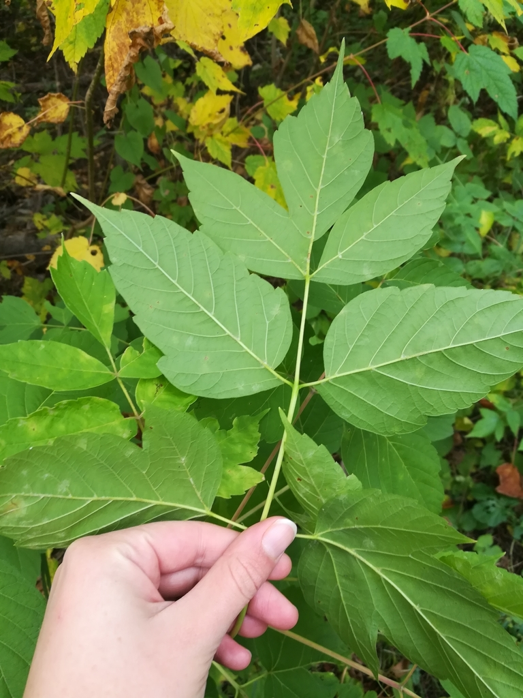
Acer negundo - Boxelder
Medicinal Uses:
American Indians used the inner-bark as an emetic (a substance that induces vomiting).Other uses:
The sap was boiled down as a sugar source.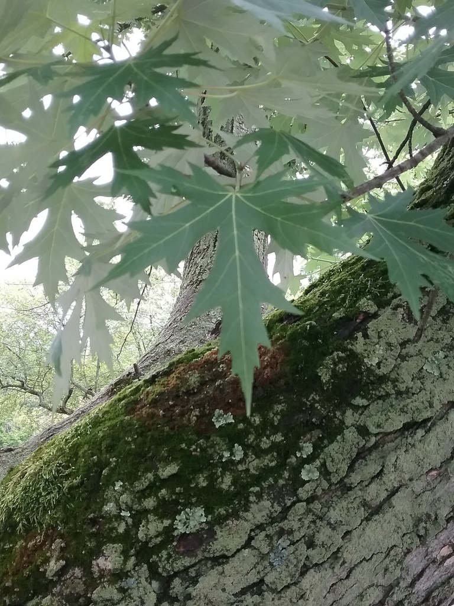
Acer Saccharinum - Silver Maple
Medicinal Uses:
An infusion of the bark is used in the treatment of coughs, cramps and dysentery. The infusion is also applied externally to old, stubborn running sores. A compound infusion is used in the treatment of "female complaints". The inner bark is boiled and used with water as a wash for sore eyes. An infusion is used internally in the treatment of diarrhoea. An infusion of the root bark has been used in the treatment of gonorrhoea.Other uses:
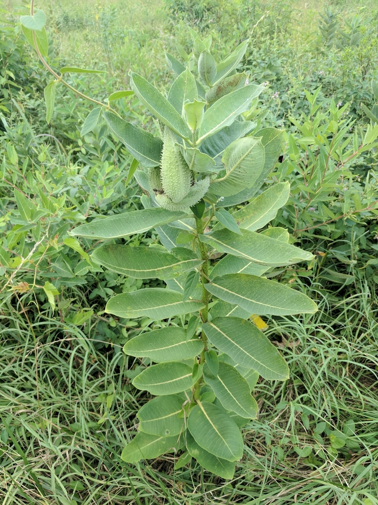
Asclepias syriaca - Common Milkweed
Medicinal Uses:
Native Americans and pioneers had to discern between silkweeds with the same genus that are poisonous.Other uses:
Precautions: Overuse of the milkweed juice, plant parts, or seeds may be dangerous because of the presence of cardiac glycosides. (Angier, et al, 2008)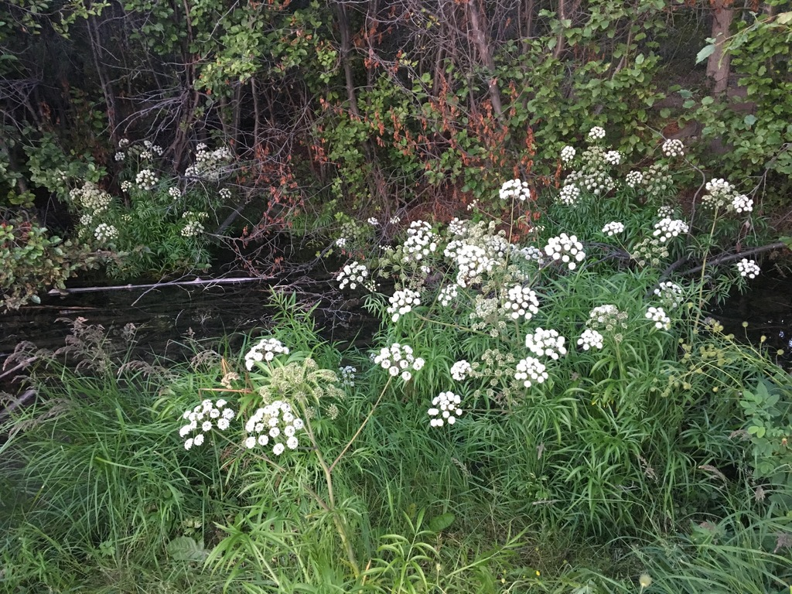
Cicuta maculata - Water Hemlock
Medicinal Uses:
Other uses: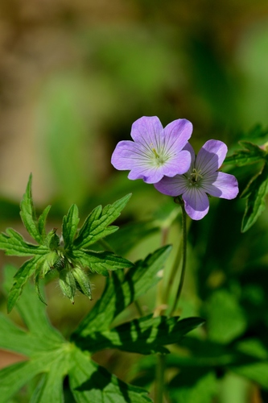
Geranium maculatum - Wild Geranium
Medicinal Uses:
They were said to be Native Americans’ strongest astringent. Native Americans made a green solution from the powdered roots and water for dysentery and internal hemorrhaging.Other uses:
Per Rose 2018 this species can be used to prepare a decoction of the roots in hot water to be consumed as tea. It is suggested that you can drink ¼ cup as needed, or use topically as a skin wash.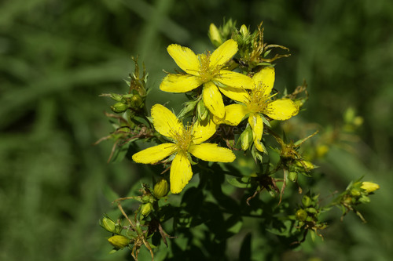
*Hypericum perforatum - St John's Wort
Medicinal Uses:
Per the Shaker Medical Herbs compendium (1998) it was used to cure suppression of uriine, chronic urinary affections, diarrhea, dysentery, worms, and jaundice. It was also used as an ointment, used for wounds, ulcers, and tumors.Other uses:
Used in depression treatments in Germany outselling conventional antidepressants Prozac by as much as 20 to 1. Over 20 controlled clinical trials confirmed its safety and effectiveness. It is currently being researched for AIDS treatment.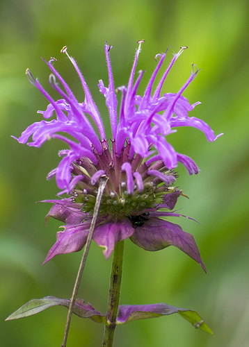
Monarda fistulosa - Wild Bergamot
Medicinal Uses:
American Indians used leaf tea for colic, flatulence, colds, fevers, stomachaches, nosebleeds, insomnia, heart trouble; in measles to induce sweating; poulticed leaves for headaches.Other uses:
Its essential oil is high in carvacrol which has anesthetic, worm-expelling, anti-inflammatory, antioxidant, and diuretic properties (Foster & Duke)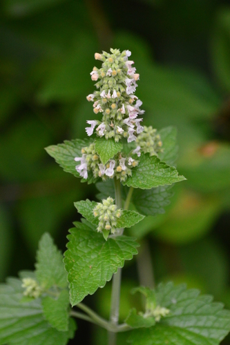
*Nepeta cataria - Catnip
Medicinal Uses:
Per the Shaker Medical Herbs compendium (1998), this plant is useful in febrile and nervous diseases. It is also used to restore the menstrual secretions. It can be used in flatulence and to relieve an upset stomach.Other uses:
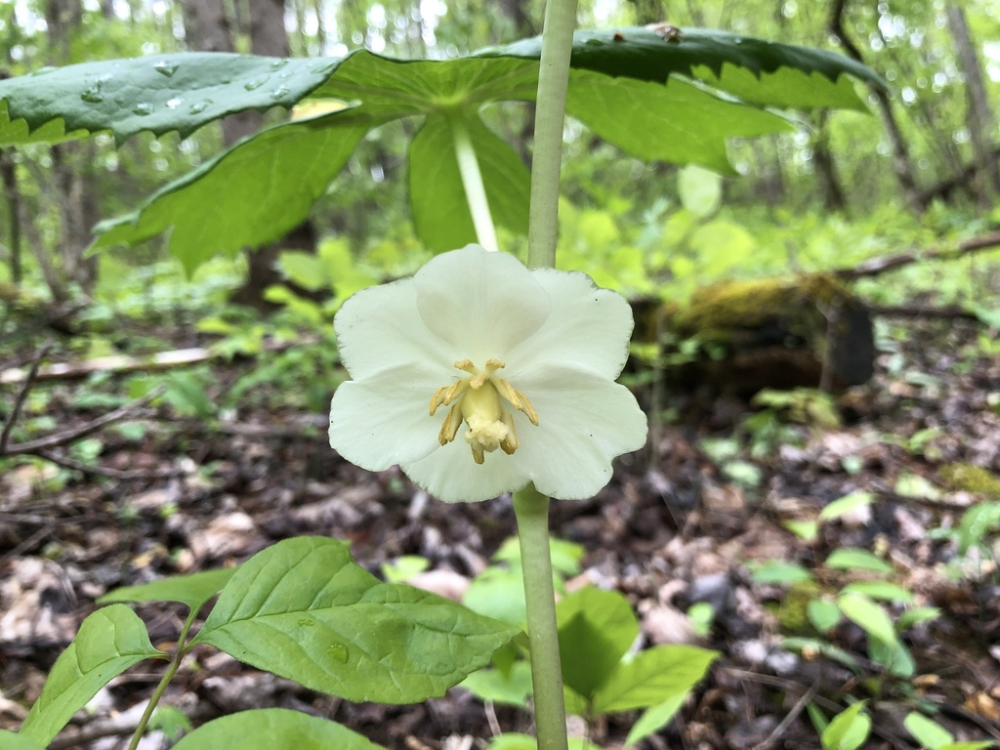
Podophyllum peltatum - Mayapple
Medicinal Uses:
Cherokees and other tribes used the root, steeped in water to make a tea, in differing small doses as purgative and an emetic. They also used it to kill and expel worms from the digestive tract.Other uses:
Currently the tea of the root is still used sparingly for liver disorders, rheumatism, and venereal diseases. ( Foster 2008)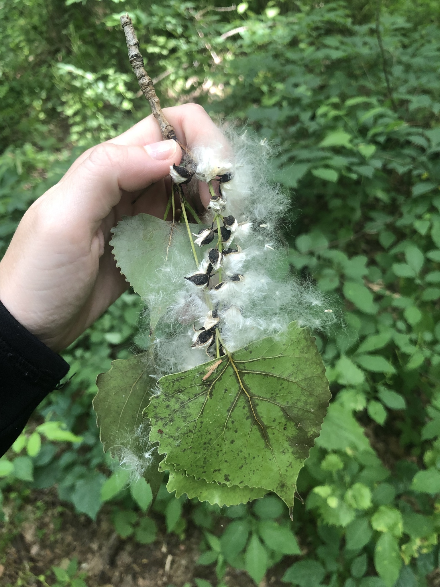
Populus deltoides - Eastern Cottonwood
Medicinal Uses:
Other uses:
Richards and Tyrl: The leaves and stems have been used as a yellow and orange natural dye //by a heating process. 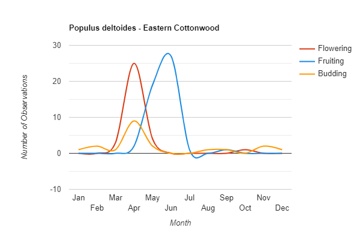
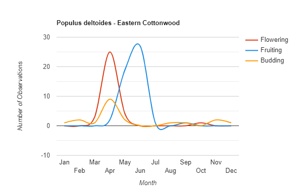